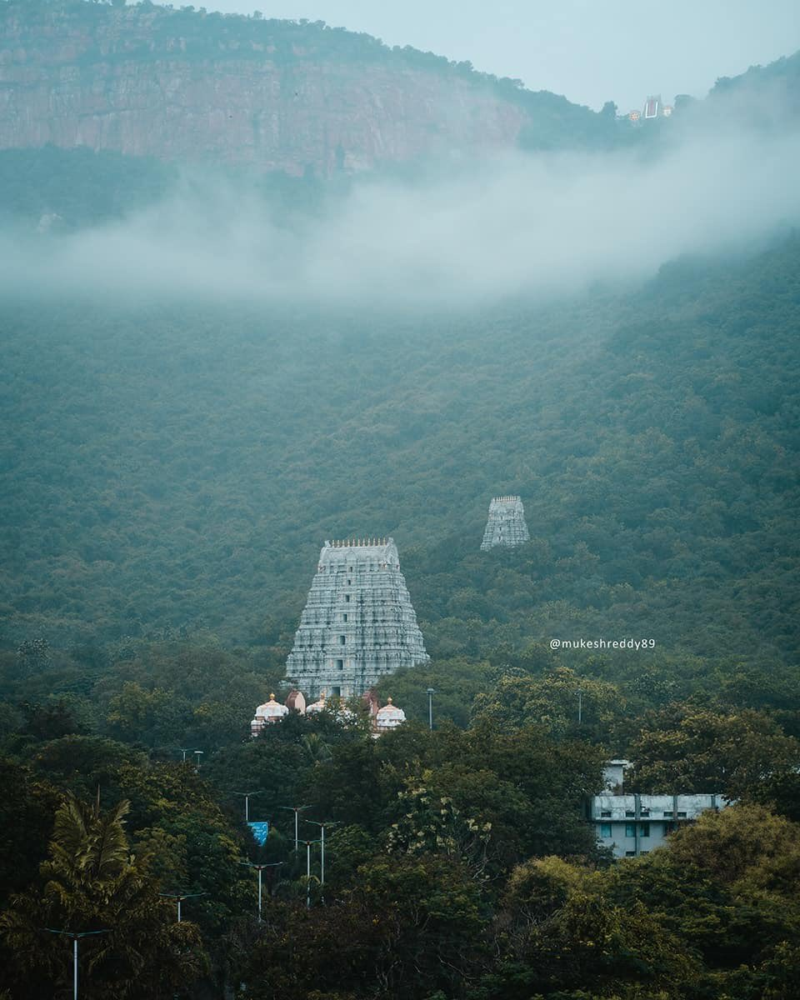

History of My Hometown
My Home town is Tirupati which is a popular pilgrimage city located in the Chittoor district of Andhra Pradesh, India. It is known for its famous temple, Sri Venkateswara Temple, which is dedicated to Lord Venkateswara, an incarnation of Lord Vishnu. The temple is situated on the Tirumala hills, around 22 kilometers away from the main city of Tirupati.
Historical Places
-

Tirumala
Tirumala Temple, also known as Sri Venkateswara Temple or Tirupati Balaji Temple, is a renowned Hindu temple located in the town of Tirumala in the Chittoor district of Andhra Pradesh, India. It is situated on the seventh peak of the Tirumala hills, also known as Venkatadri. The Tirumala Tirupati Devasthanams (TTD) provides accommodation facilities for pilgrims visiting the temple. There are various guesthouses and cottages available for devotees to stay. Additionally, the temple complex has facilities like food courts, cloakrooms, and medical services to cater to the needs of the visitors. Prasadam: The temple offers free prasadam (sacred food) to all devotees.
-

Zoo park
The Sri Venkateswara Zoological Park, also known as Tirupati Zoo Park, is a popular attraction located at the foothills of the Tirumala hills near Tirupati in Andhra Pradesh, India. It is spread over an area of about 5500 acres and serves as a conservation center for various species of animals, birds, and reptiles. The Tirupati Zoo Park focuses on environmental education and awareness. It organizes various educational programs, nature camps, and workshops for school children and visitors to promote wildlife conservation and environmental sustainability.
-

Science centre
Sri Venkateswara University (SVU), which is located in Tirupati. SVU offers various science-related courses and has departments dedicated to subjects like physics, chemistry, mathematics, and computer science. The university also conducts research in scientific fields and contributes to the advancement of knowledge. While there may not be a dedicated science center in Tirupati, these educational institutions provide opportunities for students and researchers to engage in scientific exploration and learning.